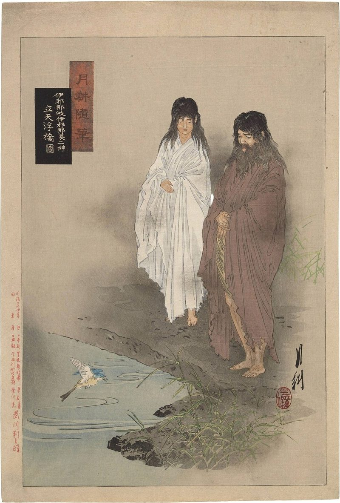
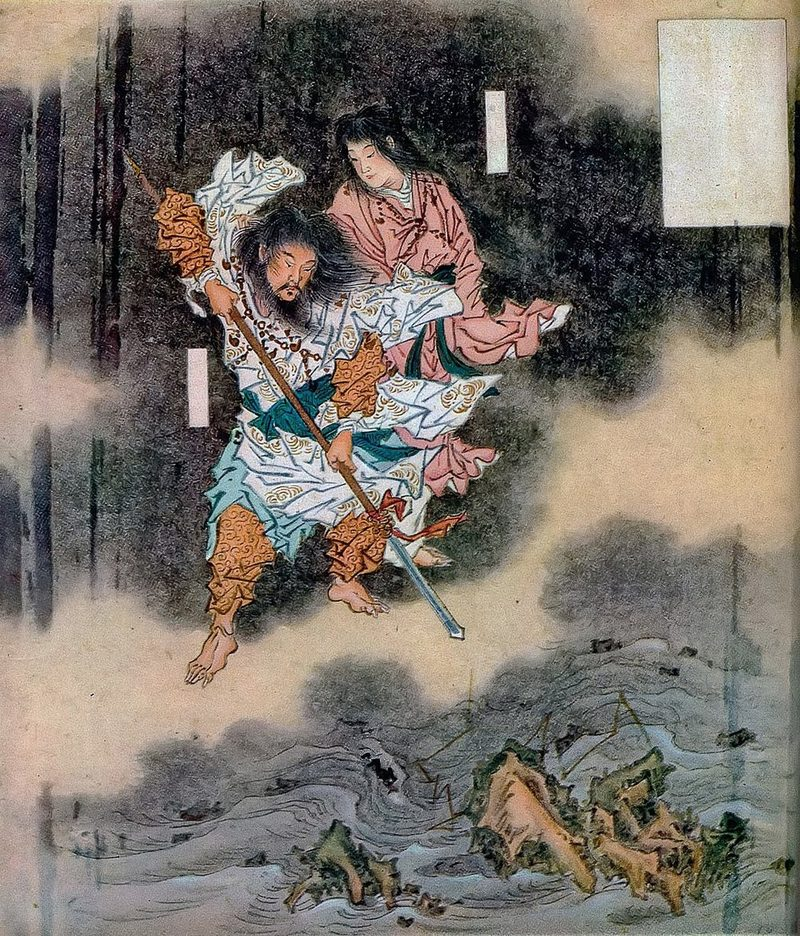
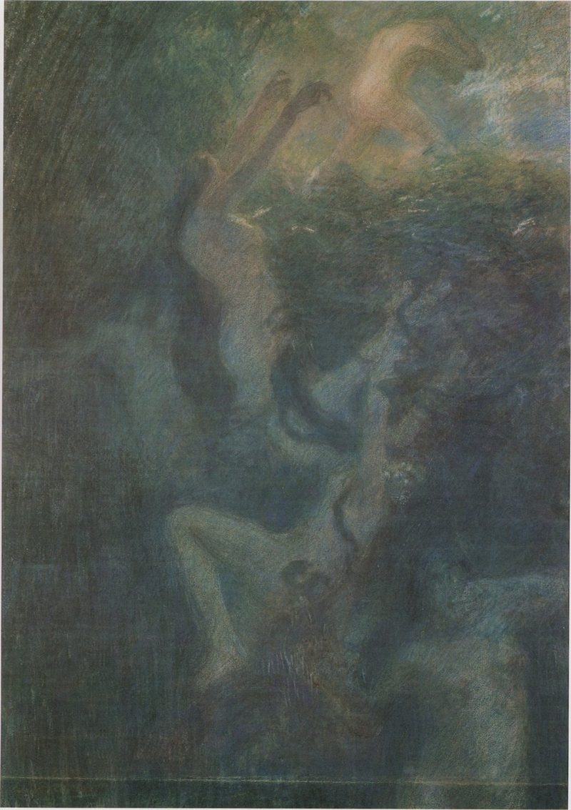

F. Hadland Davis’s Myths & Legends of Japan
Izanagi and Izanami
A myth of creation, marriage, and the first descent into the dark.
The Floating Bridge

Izanagi and Izanami stood on the Floating Bridge of Heaven and looked down into the abyss. They inquired of each other if there were a country far, far below the great Floating Bridge. They were determined to find out. In order to do so they thrust down a jewel-spear, and found the ocean. Raising the spear a little, water dripped from it, coagulated, and became the island of Onogoro-jima (“Spontaneously-congeal-island”).
The Pillar and the Promise
Upon this island the two deities descended. Shortly afterwards they desired to become husband and wife, though as a matter of fact they were brother and sister; but such a relationship in the East has never precluded marriage. These deities accordingly set up a pillar on the island. Izanagi walked round one way, and Izanami the other. When they met, Izanami said: “How delightful! I have met with a lovely youth.” One would have thought that this naïve remark would have pleased Izanagi; but it made him, extremely angry, and he retorted: “I am a man, and by that right should have spoken first. How is it that on the contrary thou, a woman, shouldst have been the first to speak? This is unlucky. Let us go round again.” So it happened that the two deities started afresh. Once again they met, and this time Izanagi remarked: “How delightful! I have met a lovely maiden.” Shortly after this very ingenuous proposal Izanagi and Izanami were married.
The Radiant Children and the Fire God

When Izanami had given birth to islands, seas, rivers, herbs, and trees, she and her lord consulted together, saying: “We have now produced the Great-Eight-Island country, with the mountains, rivers, herbs, and trees. Why should we not produce some one who shall be the Lord of the Universe?”
The wish of these deities was fulfilled, for in due season Ama-terasu, the Sun Goddess, was born. She was known as “Heaven-Illumine-of-Great-Deity,” and was so extremely beautiful that her parents determined to send her up the Ladder of Heaven, and in the high sky above to cast for ever her glorious sunshine upon the earth.
Their next child was the Moon God, Tsuki-yumi. His silver radiance was not so fair as the golden effulgence of his sister, the Sun Goddess, but he was, nevertheless, deemed worthy to be her consort. So up the Ladder of Heaven climbed the Moon God. They soon quarrelled, and Ama-terasu said: “Thou art a wicked deity. I must not see thee face to face.” They were therefore separated by a day and night, and dwelt apart.
The next child of Izanagi and Izanami was Susa-no-o (“The Impetuous Male”). We shall return to Susa-no-o and his doings later on, and content ourselves for the present with confining our attention to his parents.
Izanami gave birth to the Fire God, Kagu-tsuchi. The birth of this child made her extremely ill. Izanagi knelt on the ground, bitterly weeping and lamenting. But his sorrow availed nothing, and Izanami crept away into the Land of Yomi (Hades).
The Land of Yomi

Her lord, however, could not live without her, and he too went into the Land of Yomi. When he discovered her, she said regretfully: “My lord and husband, why is thy coming so late? I have already eaten of the cooking-furnace of Yomi. Nevertheless, I am about to lie down to rest. I pray thee do not look at me.”
“I pray thee do not look at me.”
Izanagi, moved by curiosity, refused to fulfil her wish. It was dark in the Land of Yomi, so he secretly took out his many-toothed comb, broke off a piece, and lighted it. The sight that greeted him was ghastly and horrible in the extreme. His once beautiful wife had now become a swollen and festering creature. Eight varieties of Thunder Gods rested upon her. The Thunder of the Fire, Earth, and Mountain were all there leering upon him, and roaring with their great voices.
Izanagi grew frightened and disgusted, saying: “I have come unawares to a hideous and polluted land.” His wife retorted: “Why didst thou not observe that which I charged thee? Now am I put to shame.”
Izanami was so angry with her lord for ignoring her wish and breaking in upon her privacy that she sent the Eight Ugly Females of Yomi to pursue him. Izanagi drew his sword and fled down the dark regions of the Underworld. As he ran he took off his headdress, and flung it to the ground. It immediately became a bunch of grapes. When the Ugly Females saw it, they bent down and ate the luscious fruit. Izanami saw them pause, and deemed it wise to pursue her lord herself.
By this time Izanagi had reached the Even Pass of Yomi. Here he placed a huge rock, and eventually came face to face with Izanami. One would scarcely have thought that amid such exciting adventures Izanagi would have solemnly declared a divorce. But this is just what he did do. To this proposal his wife replied: “My dear lord and husband, if thou sayest so, I will strangle to death the people in one day.” This plaintive and threatening speech in no way influenced Izanagi, who readily replied that he would cause to be born in one day no less than fifteen hundred.
The above remark must have proved conclusive, for when we next hear of Izanagi he had escaped from the Land of Yomi, from an angry wife, and from the Eight Ugly Females. After his escape he was engaged in copious ablutions, by way of purification, from which numerous deities were born. We read in the Nihongi: “After this, Izanagi, his divine task having been accomplished, and his spirit-career about to suffer a change, built himself an abode of gloom in the island of Ahaji, where he dwelt for ever in silence and concealment.”